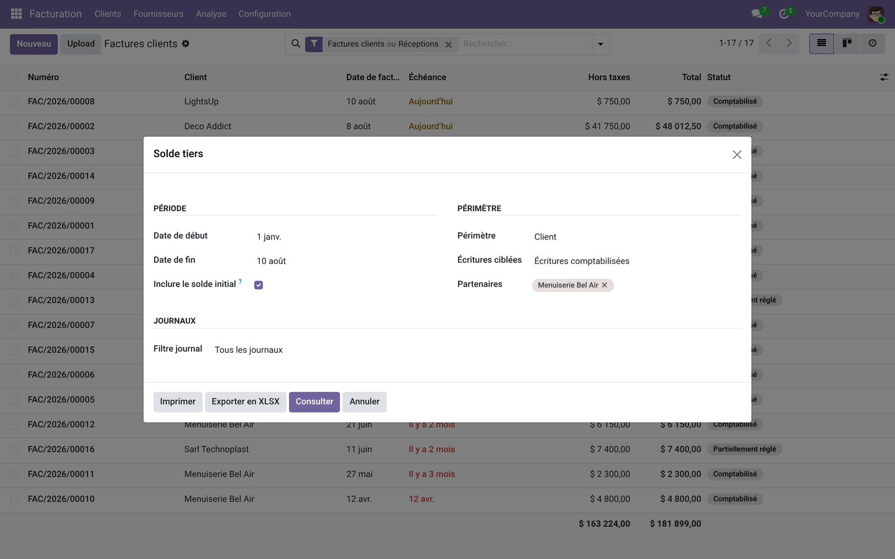
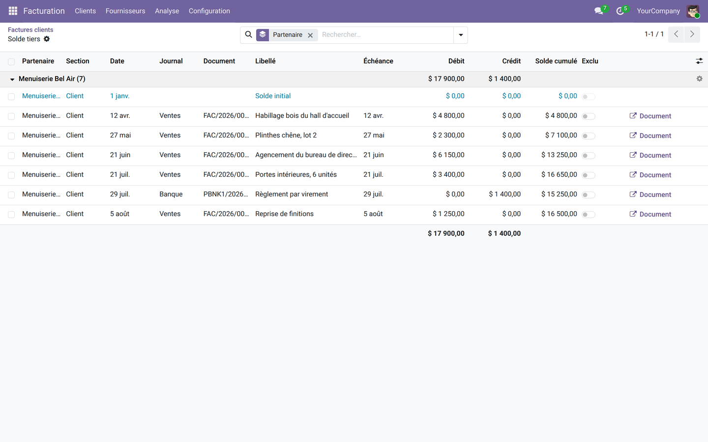
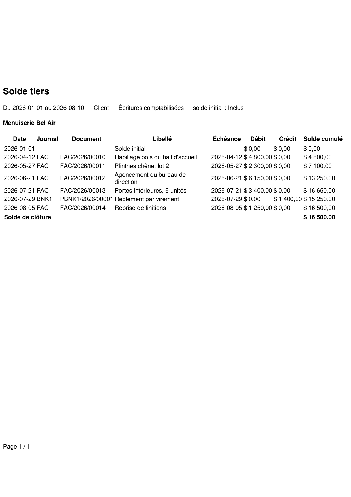

Le relevé de compte qui manque à la Communauté : chaque facture, chaque avoir, chaque règlement dans l'ordre, avec le solde recalculé sur chaque ligne — à l'écran, en PDF et en Excel.
Odoo Community sait dire qu'un client doit 16 500 €. Il ne sait pas dire comment on en est arrivé là. Quand ce client appelle pour contester, il faut ouvrir les factures une par une, retrouver les règlements, refaire l'addition à la main — et espérer tomber sur le même chiffre que lui. Le grand livre auxiliaire, ce document que tout comptable réclame dès la première semaine, n'existe pas dans la Communauté.
Un seul écran : la période, le report à nouveau, la portée, les écritures visées, les tiers et les journaux. Rien à paramétrer avant de s'en servir.

La ligne d'ouverture, puis chaque document avec son journal, son libellé, son échéance et le solde cumulé qui avance : 4 800, 7 100, 13 250, 16 650 — puis 15 250 après le règlement. Chaque ligne s'ouvre sur son document d'origine.

Le même relevé, en-tête de société compris, avec la période et les filtres retenus rappelés en sous-titre — pour qu'aucune discussion ne commence par « sur quelle période ? ». Une version Excel s'exporte du même écran.

Complétez avec la Balance âgée (qui doit quoi, et depuis quand), les Relevés par courriel (envoi périodique et attestation de solde), le Solde sur la facture, le Solde sur le devis et l'Encours et limite de crédit — ou prenez la suite complète en une installation. Voir la famille sur apps.odooskills.com.
Licence LGPL-3 — compatible Odoo 19.0 Community et Enterprise. Support : support@odooskills.com.